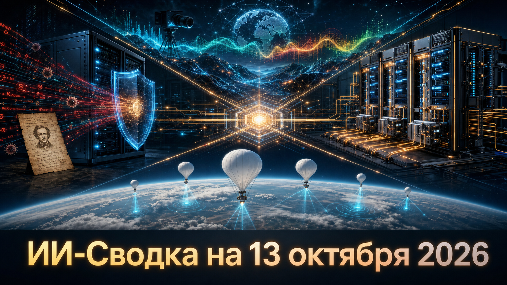

Новостей сегодня меньше, чем обычно
Сегодняшняя повестка связывает безопасность развёрнутых LLM-сервисов с физической и вычислительной инфраструктурой ИИ. Одновременно появляются новые практические контуры world models: от интерактивной аудиовизуальной среды до автономного сбора атмосферных данных для прогнозирования.
Главный вывод дня: конкурентоспособность ИИ всё больше зависит не только от модели, но и от защищённости её сервисного слоя, открытости аппаратной экосистемы и качества данных из реального мира.
Исследователи Black Lotus Labs сообщили о кампании PoeLLM, также называемой Canto Incognito, которая нацелена на публично доступные сервисы ИИ и open-source-развёртывания, включая LiteLLM и Ollama. По данным исследования, число затронутых серверов превысило 3 400; заражённые хосты использовались для криптомайнинга, сканирования и дальнейшего распространения вредоносной активности.
Особенность кампании — использование стихотворения в GitHub-репозитории как изменяемого указателя на управляющие серверы. Исследователи связывают один из вероятных путей проникновения в LiteLLM с endpoint для тестирования MCP-подключений и CVE-2026-42271. Это не новый класс уязвимости LLM как таковой, а напоминание, что публично выставленные шлюзы моделей и self-hosted inference-сервисы должны защищаться как обычная критическая интернет-инфраструктура: с обновлениями, ограничением сетевого доступа и мониторингом аномалий. Tom's Hardware и исследование Black Lotus Labs отмечают, что кампания активна как минимум с апреля, а свежим событием стало её публичное техническое раскрытие.
NVIDIA на OCP Global Summit сообщила, что открывает архитектуру Vera Rubin, связывая этот шаг с расширением экосистемы для масштабирования ИИ-фабрик. Компания указывает на участие Cisco, Google, Microsoft, Visionbay и других партнёров в развитии решений вокруг Vera Rubin.
Практический смысл инициативы — снизить барьеры для производителей серверов, сетевого оборудования и операторов дата-центров, которым нужно собирать и эксплуатировать крупные вычислительные комплексы. Пока это прежде всего продуктово-инфраструктурное заявление самой NVIDIA: из доступного материала не следуют ни единые технические спецификации для всех поставщиков, ни независимая оценка эффекта для стоимости систем. Но направление показательно: конкуренция в ИИ всё сильнее переносится с отдельных ускорителей на совместимость стоек, сетей, питания и охлаждения. NVIDIA
Noiz AI совместно с Hong Kong University of Science and Technology представила Helix World — систему, которая принимает стартовое изображение и действия пользователя, а затем генерирует продолжение сцены в видео вместе с пространственным стереозвуком. Авторы позиционируют её как интерактивную world model, где звук меняется в соответствии с движением камеры.
Разработчики открыли демонстрацию, код, статью и preview-checkpoint. Они заявляют скорость 24 кадра в секунду при разрешении 768×512 на одном NVIDIA H800 и real-time factor 0,77. Эти показатели и качество моделирования пока являются заявлениями авторов, а веса прямо обозначены как предварительные. Тем не менее релиз интересен как попытка соединить управляемую генерацию среды, визуальную динамику и звук в одном контуре — подход, который может быть полезен для симуляций, игровых прототипов и исследований physical AI. Noiz AI
ВВС США заключили с WindBorne Systems контракт на закупку данных автономных метеозондов на сумму до $49 млн, сообщает TechCrunch. По данным издания, закупки будут проводиться по мере потребности, а на момент публикации уже размещены заказы примерно на $1,7 млн.
WindBorne эксплуатирует около 700 зондов и использует атмосферные измерения в собственной модели прогнозирования погоды на базе глубокого обучения. Контракт показывает, как автономные физические системы становятся источником ценных данных для ИИ-моделей, а не только конечным устройством для выполнения команд. В то же время в доступном материале не приведён первичный контрактный документ ВВС, поэтому условия и сроки следует трактовать как сведения из публикации, а не как самостоятельно проверенную контрактную документацию. TechCrunch